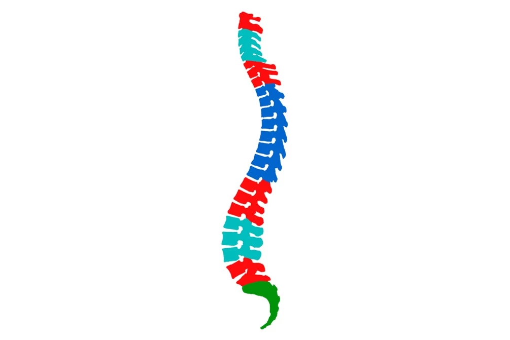

Шкала оценки нестабильности при опухолях позвоночника SINS
Spinal Instability Neoplastic Score

Патологический перелом на фоне опухолевого процесса ведет не только к развитию выраженного болевого синдрома, неврологического дефицита, он так же является маркером, определяющим тактику лечения больного.
На стабильность позвоночника в условиях опухолевого процесса влияет расположение очага, выраженность боли, тип поражения, распространение опухоли на структуры позвонка, коллапс тела позвонка и вовлечение мягкотканных структур.
Биомеханические и клинические исследования доказали, что в позвоночнике существуют сегменты, на которые приходится большая опорная нагрузка. Верхнешейный (Oc-C2), шейно-грудной (С7-Th2), грудо-поясничный (Th11-L1), пояснично-крестцовый (L5-S1) наиболее уязвимы в контексте развития нестабильности, в следствии их смежности с более ригид-ными отделами. Грудная дуга менее подвержена развитию нестабильности, так как серьезную опорную роль играет реберный каркас. Ригидный отдел – крестец, нестабильность в этом отделе происходит при распространении опухоли на крестцово-подвздошное сочленение.

Эти принципы отражены в классификации SINS (Spinal Instability Neo-plastic Score) для бальной оценки стабильности позвоночника (Табл. 7). Ин-терпретируется бальная оценка: стабильный позвоночник (0-6 баллов), не-определенная стабильность, возможно надвигающаяся нестабильность (7-12 баллов), нестабильный позвоночник (13-18 баллов) Шкалу разработала рабочая группа Spine Oncology Study Group под руководством Charles Fisher.
Шкала SINS
| Параметр | Баллы |
|---|---|
| Локализация | _ |
| Переходный отдел: Oc-C2, C7-Th2, Th11-L1, L5-S1 | 3 |
| Мобильный отдел: C3-C6, L2-L4 | 2 |
| Полуригидный отдел: Th3-Th10 | 1 |
| Ригидный отдел: S2-S5 | 0 |
| Боль облегчается в положении лежа и/или боль связана с движением или с нагрузкой на позвоночник | _ |
| Да (механическая боль) | 3 |
| Нет (периодические боли, но не механические) | 1 |
| Безболезненное течение | 0 |
| Поражение кости | _ |
| Литическое | 2 |
| Смешанное | 1 |
| Бластическое | 0 |
| Нарушение оси позвоночника | _ |
| Наличие подвывиха, трансляция | 4 |
| Вновь появившаяся деформация (кифоз/сколиоз) | 2 |
| Нормальная ось | 0 |
| Коллапс тела позвонка | _ |
| Больше 50% | 3 |
| Меньше 50% | 2 |
| Отсутствие коллапса при поражении >50% тела | 1 |
| Ни одного из перечисленного | 0 |
| Вовлечение заднебоковых структур позвоночника (суставов, ножек дуг, перелом реберно-позвоночных суставов или их замещение опухолью) | _ |
| Двустороннее | 3 |
| Одностороннее | 1 |
| Ни одного из перечисленного | 0 |
| Итоговая оценка | _ |
| Стабильный позвоночник | 0-6 |
| Неопределенная стабильность (решает хирург) | 7-12 |
| Нестабильный позвоночник | 13-18 |